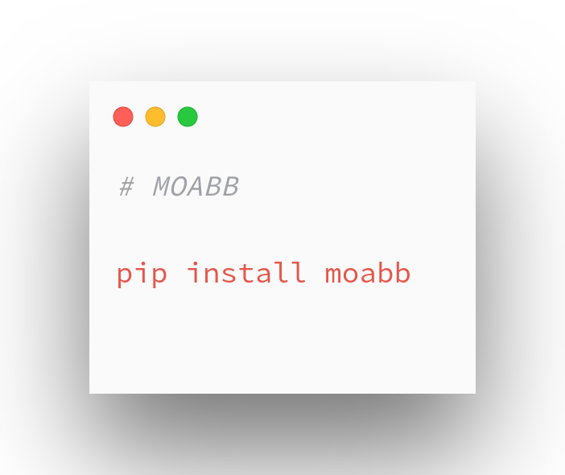

Installation#
MOABB is written in Python 3, specifically for version 3.8 or above.
The package is distributed via Python package index (PyPI), and you can access the source code via Github repository.
There are different ways to install MOABB:
Install via pip
For Beginners

New to Python? Use our standalone installers that include everything to get you started!
Building from src and the dev env
For Advanced Users

Already familiar with Python? Follow our setup instructions for building from Github and start to contribute!